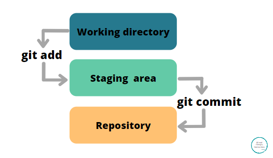

“Git” es un sistema de control de versiones distribuido, es decir, permite crear imagenes o instantáneas de un archivo ó una serie de archivos por una o más personas.
¿Cómo funciona?
“Git” crea instantaneas con un código y una descripción dada por nosotros.
La función principal de “git” es revertir el archivo actual a un archivo del histórico que se haya creado bajo la supervisión de “git”.
“Git” puede tomar una instantánea de una rama de archivos de forma que si queremos volver a una versión especial, donde por ejemplo, todo funcionaba y para que funcione se deban restaurar n cantidad de archivos o documentos.
creando repositorios
comandos:
git init
Comando que se utiliya al comenzar un proyecto, se inicializa el seguimiento de un directorio, aunque aun no se ha determinado que archivo de ese directorio será seguido para versionar.
Al ejecutarlo “git” creará dos áreas donde irá almacenando las versiones de los documentos modificados.
Las áreas son:
“staging area” (área de ensayo)
Repositorio local

Existen varias formas de iniciar un directorio en “git”
Dentro de la carpeta donde está el archivo que queremos supervisar, hacemos clic derecho del ratón → seleccionamos “Open Git bash here”.
Usando el comando “git init”
git add [file]
Comando que indica a “git” el archivo de un documento del directorio inicializado anteriormente, “git” guardará el estado del archivo en preparación para realizar un commit.
git commit -m [“descripción de la versión]
Registra los cambios del archivo premanentemente en el historial de versiones.
git status -s
Nos indicará un listado de los archivos y/o directorios nuevos. Si nos aparece un par de ?? indica que esos directorios u/o archivos no están en seguimiento.
git log
Enumera el historial de versiones para la rama actual.
git log --oneline
Enumera el historial de versiones pero en una sola linea, sin los datos específicos